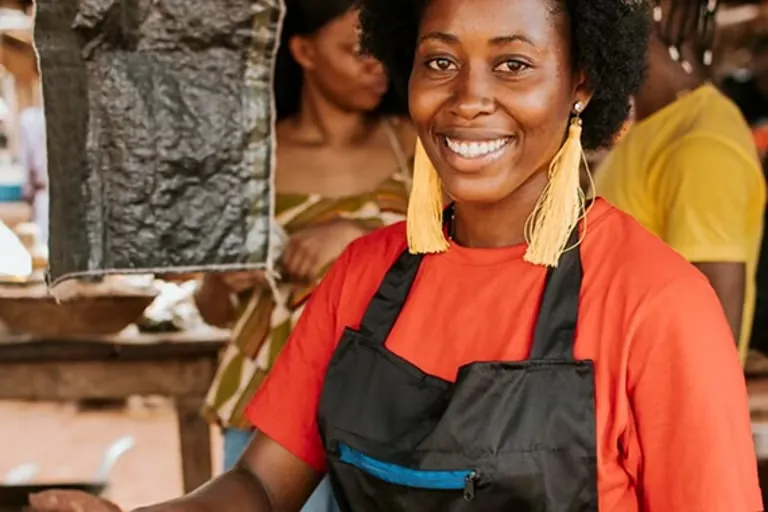
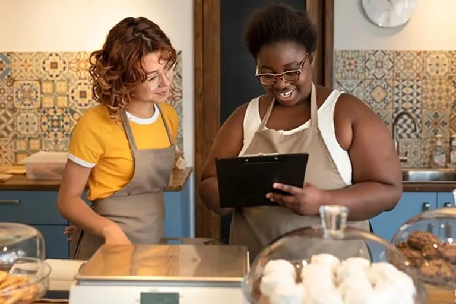

About Us
Food as a vehicle for change in Rwanda.
Our Story
BibimBite was born from a simple yet powerful idea: food can be a vehicle for change. In Rwanda, many single mothers face financial hardship and limited job opportunities, making it difficult to provide for their families.
We saw an opportunity to create something more than just a food business—a platform for empowerment. Through hands-on training and employment in our food truck, we equip single mothers with skills, financial independence, and a supportive community. At BibimBite, every meal served is a step toward a brighter future, proving good food that can nourish both lives and livelihoods.


Our Values
We believe that food has the power to connect, heal, and inspire — and our values reflect that belief in every meal we serve and every partnership we build.
- Collaboration
- Creativity
- Connections
- Dignity
Behind Bibimbite
Seungwoo Oh
Founder & CEO
“Living in Korea, I've always seen bibimbap as more than just a meal — it's a bowl full of balance, color, and nourishment.
Each ingredient brings something unique, and together they create something healthy and whole. That idea inspired me to start BibimBite — to share this harmony with communities that don't have easy access to nutritious food.
My hope is simple: to make healthy eating accessible for everyone, and to spread the warmth and wellness that good food can bring.”